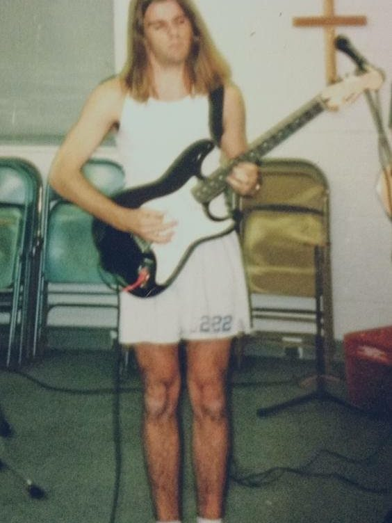
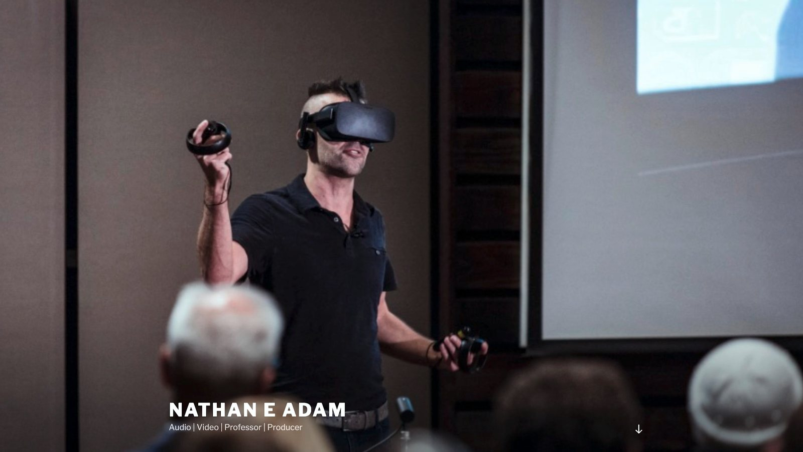
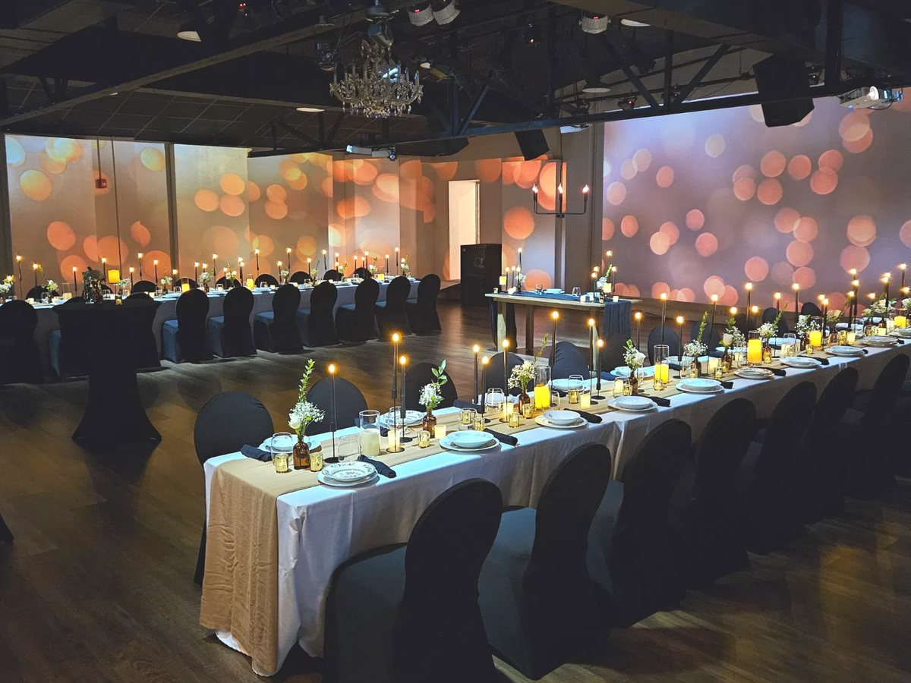
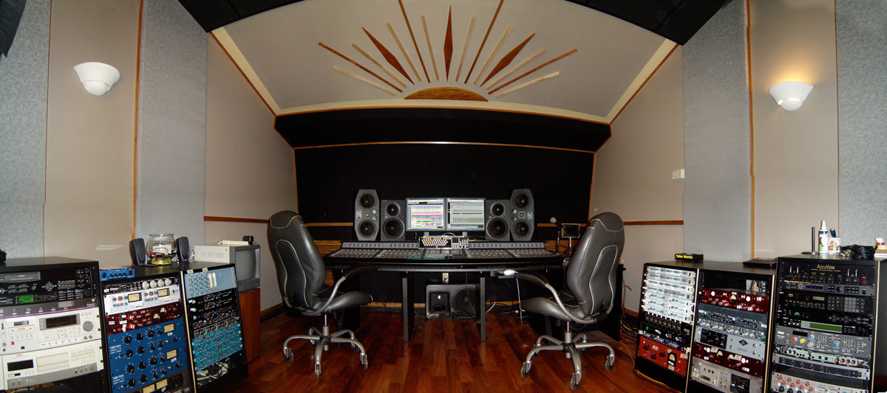
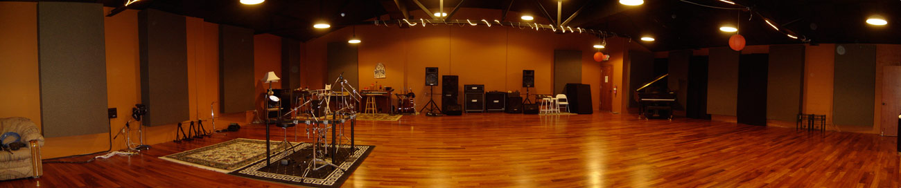
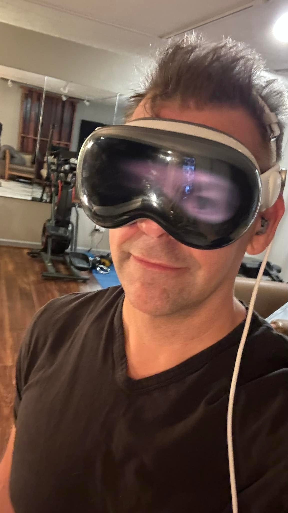

I have an information systems degree and an MBA, both from Pittsburg State in Kansas, finished in 1999 and 2000. Which is to say I was trained to understand computers and business at the exact moment computers were about to dismantle the music business.
In 2001 I took over the commercial music program at Labette Community College, which was the smallest two-year recording program in the state of Kansas. And believe me, that's small. I was chairing a program that taught recording at the exact moment recording moved inside the computer. Then editing followed it in. Then photography. Then distribution. Then file sharing took the business model out from under all of it.
Everyone in the field was very good at a craft that was being rebuilt underneath them. Engineers who'd spent fifteen years learning the feel of one particular console were handed a mouse and a manual. Nobody was teaching them. The manuals were written for the software, not for the person holding it, and reading one felt a lot like being handed the assembly instructions for your own replacement.
That gap turned out to be the whole career. Middle Tennessee State in 2003, first as associate chair, then in the Department of Recording Industry. Belmont since 2010.


Building the thing I wished existed
Multi-Platinum.com started because the training people actually needed wasn't for sale. We put working Nashville engineers on camera and had them open up their real sessions. Not tidy demos built for the camera, but actual records with actual problems still sitting in them. It became one of the first online training companies in music production, and I've produced more than fifty courses through it since.
Two books followed, both with Focal Press and both distributed internationally: Multi-Platinum Pro Tools in 2006, and Pro Tools 9: The Mixer's Toolkit. Writing them taught me something I wasn't expecting. The hard part of teaching technology is never the technology. It's finding the one sentence that makes a frightened professional believe they can still do their job.
Alongside that I kept producing. From 2009 to 2015 I post-produced Presleys' Country Jubilee for the RFD Network, episodes 1 through 142, which went out to thirteen countries and about half a million people a week. I engineered for Vince Gill, Earl Scruggs, and the Oak Ridge Boys. I recorded, edited and mixed the orchestral score for Peter Pan with Cathy Rigby. I cut Tonight with Deborah Norville for MSNBC. I cut guitar lessons that reached a hundred thousand students.
None of that was a plan. It was the ordinary working life of someone who could operate the new tools while the industry figured out what it wanted to be.
Six thousand students
I've taught at Belmont University for most of two decades, currently as Associate Professor of Media Production in the Mike Curb College of Entertainment & Music Business. Somewhere past six thousand students have come through my classrooms.
Since 2009 I've been on faculty at more than fifty GRAMMY Camps. Los Angeles at USC, New York at the Converse Rubber Tracks studios, Nashville at Belmont. A week at a time, high school students from all over the country, learning to record. I've also written curriculum for the GRAMMY Foundation: GRAMMY Camp: Weekends and The Recording Academy Presents: GRAMMY Career Pathways.
The camp students are the ones who recalibrated me. They walk in with no fear of the equipment whatsoever, sit down at a console that would have terrified me at their age, and start pushing buttons to see what happens. It's a useful reminder every summer that the anxiety I've spent a career treating is learned, not native. Nobody is born afraid of a piece of software.



In 2017 I gave a TEDx talk about virtual reality and what happens when an experience that used to require money and travel becomes something anyone can have. I was arguing about VR. I'd make the same argument now about AI, almost word for word. I've since served on the TEDxNashville board and produced the multicamera shoots for other people's talks, which is its own education in what makes an idea land.
In 2022 I finished a doctorate in education at Tennessee State. The dissertation studied how audio engineering faculty actually experienced teaching through COVID. A hands-on, room-dependent discipline, forced overnight into a format nobody had ever designed it for. Partly stubbornness, partly a decision that if I was going to spend my life teaching adults through technological upheaval, I should probably study how adults learn.
The room in Murfreesboro
I co-own The Walnut House, an event complex in Murfreesboro. This looks like a departure from everything above it, and it isn't. The walls are projection surfaces, the lighting is programmed, and the room changes character completely depending on what we put on it. A wedding one night, a corporate dinner the next, a holiday party the night after that.
It's the same job again, in a different building. Somebody has technology they don't know how to use yet, and the interesting part is what becomes possible once they do.



Why I'm doing this now
AI is doing to every profession what digital did to mine. Same shape, wider blast radius. The same people are having the same 2 a.m. thought: I'm too far into this career to start over, and too far from retirement to wait it out.
The people teaching AI right now are mostly twenty-five years old and have never had a career interrupted. I don't say that to be unkind. Ok, maybe slightly unkind. :) But there is a real difference between explaining a tool and having stood in a room full of people whose livelihoods just got rewritten, and I've done the second one about six thousand times.
So I'm doing it in the open. Reinventing my own work with these tools, and publishing what happens, including the weeks it goes badly. Not because I've figured it out. Because I'm roughly the same distance from figuring it out as you are, and I've been the guide for this exact crossing before.

I have a doctorate, twenty-five years in, kids, and a house. If I can do this at my age, so can you.
— Nathan